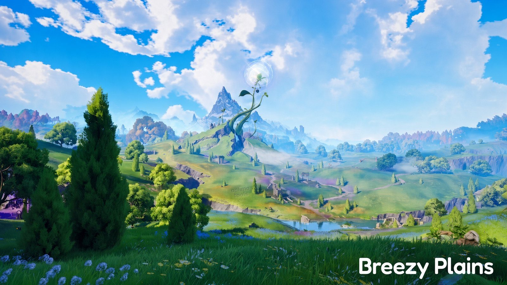

Ci sono luoghi dove il vento ha una voce, e la Costa dello Zefiro (Zephyr Coast) è uno di questi. È la terra dell'Aeon Aeolus, fertile e varia: prati verdi, isole sul mare e terra calda, ed è la macro-regione in cui comincia l'avventura. Le brezze marine portano il profumo di Duskwhisper, le onde suonano la melodia delle maree e gemme splendenti nascono dalla danza delle fiamme della terra. Il vento governa la costa attraverso Aeolus, mentre le maree rappresentano le isole dell'arcipelago.
Percorrendola si incontrano prima le Pianure Brezzose (Breezy Plains), l'area di partenza protetta per i primi passi, verdi pianure amate dal vento, dove sabbie argentee cuciono insieme mare blu e colline; nuvole basse vagano sui prati e ai piedi delle alture innevate un mare di fiori dipinge il paesaggio, con un piccolo villaggio di profumieri. Più al largo si stende l'arcipelago azzurro delle Isole Whisperwake, spezzato dalle maree, dove ogni isola ha il suo carattere: Bubble Drift fluttua serena come un sogno, cascate d'argento scuotono i crinali, e ossa di corallo appassite diventano solitari banchi di sabbia dove neve e ghiaccio custodiscono gli anni. Tra i luoghi abitati, Bloomville, chiamata «il luogo dove i fiori sbocciano in abbondanza», è celebre per fiori e profumi: ogni dieci anni vi si tiene la grande Festa della Fioritura (Bloom Festival), in cui gli abitanti offrono i profumi fatti a mano e attendono la benedizione dei Guardiani. Sulle scogliere delle Whisperwake sorge il Mirrorsea Village, dove hanno trovato casa i sopravvissuti al naufragio di Shige City, tra alghe ad asciugare al vento, ulivi nei boschi scuri e umani e Aniimo che vivono fianco a fianco in una vita semplice e calda. Azureville è invece la grande città tra le isole. Più avanti, nelle zone di livello alto, si apre lo Zephyrus Landbridge, e a nord-ovest si trova un gruppo di isole vulcaniche.


A Bloomville la festa ha i suoi volti. L'anziano Jaeger ricorda a tutti come funziona: ogni dieci anni appare l'Irisalis Irelia e i fiori sbocciano. La profumiera Sunia, nata senza poter vedere i colori, vive accanto al suo Iris, Snowy. Velouria, la regina dei Flutternym, è un'Aniimo capricciosa e sfrontata, che conosce l'antica formula di fragranze un tempo offerta agli Aeon. Il loro intreccio di storie si racconta nel Capitolo 9.
Eppure la costa porta i segni di una ferita antica. Cent'anni fa le Vene si spezzarono e il potere di Protos sfuggì al controllo: le maree diventarono sempre più caotiche e persino il tempo che Protos governa cadde nel disordine. Una tempesta violenta ha isolato la Terra delle Maree trascinando con sé frammenti di tempo; può intrappolare chi vi entra fino a farlo svanire, e solo brevi tratti di canto, portati da spruzzi improvvisi, arrivano all'esterno. Di quel secolo di cambiamenti parla la leggenda di Irelia, che trovi nel Capitolo 8.